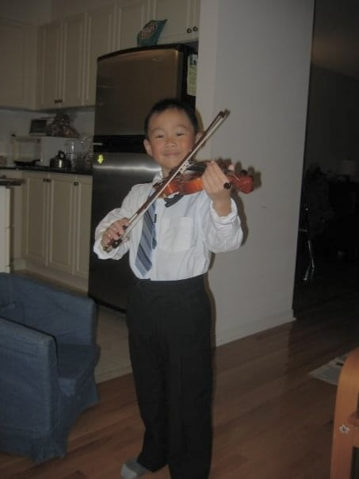

About
Before moving to more boring things, I completed a Bachelor of Music from the Faculty of Music at the University of Toronto, where I studied violin with Mark Fewer.
The title of my website refers to the logical inference modus tollendo ponens:
1.
Show P
DD
2.P ∨ QPR
3.~QPR
4.PMTP 2,3
It alludes to the idea that normative evaluations are best made comparatively.
